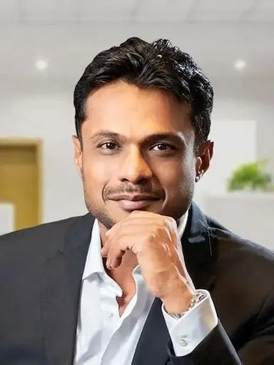

← Back to the founder directory

Sachin Bansal
From an IIT Delhi classroom and a software job at Amazon to co-founding Flipkart, the company that put online shopping on India's map.
- Born
- 5 August 1981, Chandigarh
- Country
- India
- Known for
- Flipkart, Navi Group
- Industry
- E-commerce, fintech
Early life and education
Sachin Bansal was born in Chandigarh in 1981. His father is a businessman and his mother a homemaker. He studied at St. Anne's Convent School in Chandigarh and then cracked the IIT entrance exam, reportedly on his second attempt with a much better rank than the first. He went on to IIT Delhi, where he earned a B.Tech in Computer Science and Engineering.
From Amazon to a startup
After graduating, Sachin worked briefly at Techspan and in 2006 joined Amazon Web Services as a senior software engineer in Bangalore. He later brought in his IIT Delhi batchmate Binny Bansal (the two are not related) to work there too. In 2007 the pair left Amazon with an idea of their own: an online store for Indian shoppers.
Starting Flipkart
In October 2007, Sachin and Binny started Flipkart as an online bookstore with initial capital of about ₹4 lakh. They worked out of an apartment in Koramangala, Bangalore. By Sachin's own account, in the early months he handled almost everything himself, from building the first version of the website to sourcing, packing and delivering books. The name was meant to travel beyond books, and the catalogue soon grew into electronics, fashion and many other categories.
Building a national brand
Sachin was Flipkart's CEO from its start until 2016, when Binny took over the role and Sachin became executive chairman. Over those years Flipkart added logistics, a marketplace of third-party sellers and a string of acquisitions, including the fashion platform Myntra in 2014. The company became one of India's most valuable startups and the best-known name in Indian e-commerce.
The Walmart deal and exit
In 2018, Walmart bought a controlling stake of about 77% in Flipkart for roughly US$16 billion, in what was then the largest e-commerce acquisition in the world, valuing the company at about US$20 billion. Sachin held around 5.5% at the time and sold it, reportedly receiving over ₹6,700 crore. He left Flipkart after the deal, reported to be because Walmart wanted only one founder on the board, and signed a non-compete agreement. Binny Bansal later stepped away from the company as well.
Investor and a new venture: Navi
After leaving, Sachin turned to investing and building. He had been backing early-stage startups since 2014, and in 2019 he put US$100 million into Ola. His portfolio also included names such as Ather Energy, Unacademy and Inshorts. In December 2018 he founded BACQ Acquisitions, a company to build and acquire technology businesses, which became the Navi group.
Navi Technologies acquired the consulting firm MavenHive in 2019 and the general insurance brand COCO in 2020. In April 2020 Sachin was announced as its managing director, alongside a ₹209 crore investment from Gaja Capital. Today he leads Navi Group, a financial services company working in lending, insurance and mutual funds. In March 2022, Navi filed draft papers for a ₹3,350 crore IPO.
Timeline
- 1981Born in Chandigarh on 5 August.
- 2006Joins Amazon Web Services as a senior software engineer.
- 2007Leaves Amazon and starts Flipkart with Binny Bansal in October, with about ₹4 lakh.
- 2014Flipkart acquires fashion platform Myntra.
- 2016Becomes executive chairman; named with Binny Bansal to the TIME 100.
- 2018Walmart acquires a controlling stake in Flipkart; Sachin sells his stake and exits. Founds BACQ Acquisitions in December.
- 2019Invests US$100 million in Ola; Navi acquires MavenHive.
- 2020Named managing director of Navi Technologies; Navi acquires the COCO insurance brand.
- 2022Navi files draft papers for a ₹3,350 crore IPO.
Recognition
- The Economic Times Entrepreneur of the Year, 2012–13
- Named by Forbes India among India's richest people (2015)
- TIME 100 most influential people in the world, with Binny Bansal (2016)
- India Today list of India's 50 most powerful people (2017)
Leadership lessons
- Start small and do the work yourself. Packing the first orders taught the founders what customers really needed.
- Find a co-founder you trust. Sachin has often said that building with a partner makes both the stress and the success easier to share.
- Learn inside a great company, then build your own. Amazon gave the founders the playbook, and Flipkart adapted it to India.
- A big exit can be a new beginning. After Flipkart, Sachin moved into investing and a second company, Navi.
Sources
Written from public information, including Wikipedia and StartupTalky. The sources disagree on some details, such as the exact founding month of Flipkart and Sachin's current title at Navi, so Wikipedia is followed where they differ. Several figures are reported rather than confirmed. Net worth is left out because estimates conflict.